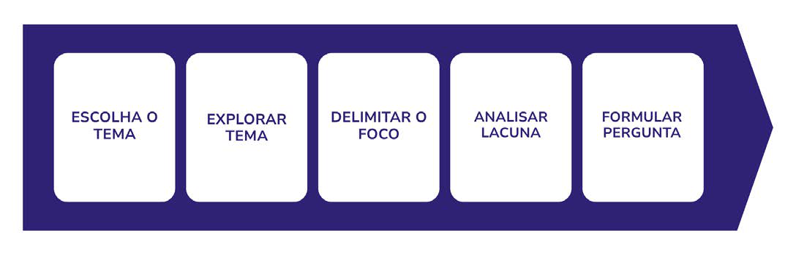

Módulo 2 | Aula 2
Definição da questão de pesquisa, busca por evidências e elaboração de síntese de evidências para políticas
Definição de questão de pesquisa
Antes de procurar estudos, documentos ou informações, é importante compreender exatamente o que se deseja responder. Uma questão de pesquisa explícita ajuda a direcionar a busca, definir o escopo do trabalho e selecionar os tipos de evidências mais adequados. Ela é a base de uma síntese de evidências para políticas públicas!
Quando a pergunta é muito ampla, a busca pode recuperar informações excessivas e pouco específicas; quando é muito restrita, existe o risco de se identificar poucas evidências.
Formulação da pergunta de pesquisa estruturada
Como descrito na Aula 1 do Módulo 2, é importante definir o escopo para estabelecer o foco que a questão de pesquisa irá investigar. Nesse momento, os atores envolvidos refletem sobre o problema, buscando referências que possam justificar sua relevância, o tempo disponível para a realização da síntese, o tipo de produto que vai abranger melhor a questão, bem como lacunas e delimitações que ajudam a tornar a pergunta mais próxima da realidade, aumentando a relevância das evidências produzidas para apoiar decisões.
Podemos observar na Figura 1 as etapas iniciais para a formulação de uma pergunta de pesquisa, começando pela escolha e exploração do tema, seguida da delimitação do foco e identificação e análise de lacunas do conhecimento. Dessa forma, a discussão sobre a temática prioritária vai poder orientar a pergunta de pesquisa, as etapas de busca e a produção de evidências.
Figura 1 – Etapas iniciais para a formulação de uma questão de pesquisa.

Fonte: Elaborado pelas autoras (2026).
Acrônimos para construção de perguntas de pesquisa
Após caracterizar o problema prioritário, recomenda-se elaborar a questão de pesquisa de forma sistematizada, garantindo organização e transparência na síntese de evidências. Para isso, utilizam-se acrônimos, nos quais cada letra representa um componente da pergunta, facilitando sua estruturação e direcionando a busca por evidências científicas, conforme a Tabela 1.
Tabela 1 – Acrônimos para a elaboração de perguntas de pesquisa.
| Acrônimos | Como utilizar? | Exemplo de pergunta |
|---|---|---|
| P – População C – Conceito C – Contexto | Perguntas amplas ou exploratórias. Usado em revisões de escopo e sínteses de evidências para políticas. | Quais estratégias de educação em saúde (conceito) são utilizadas para pessoas com diabetes (população) na atenção primária (contexto)? |
| P – População I – Intervenção C – Comparação O – Desfecho (Outcome) | Perguntas que avaliam a efetividade de intervenções. Muito usadas em estudos de caráter quantitativo, ensaios clínicos e revisões sistemáticas. | Em adultos com obesidade (população), exercícios físicos (intervenção), comparado a semaglutida (comparação), reduz o peso corporal (Desfecho)? |
| P – População I – Intervenção Co – Contexto | Perguntas que visam compreender intervenções não clínicas. Comuns em pesquisas qualitativas. | Quais são as percepções (intervenção) de mulheres no puerpério (população) sobre o acesso aos serviços de saúde (contexto)? |
| P – População E – Exposição C – Comparação O – Desfecho (Outcome) | Perguntas que analisam o efeito de uma exposição. Utilizadas em estudos observacionais que determinam fatores de risco ou prognósticos. | Em gestantes (população), a hipertensão gestacional (exposição), comparada à ausência de hipertensão (comparação), está associada ao parto prematuro (desfecho)? |
Fonte: Elaborada pelas autoras (2026).